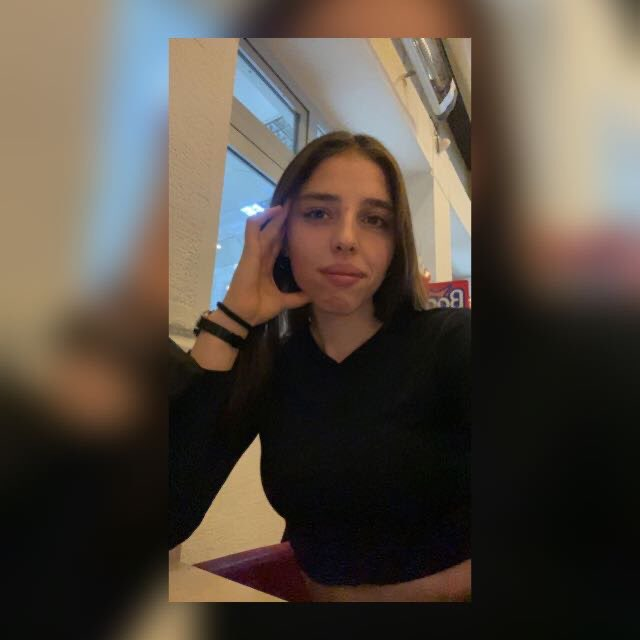

İrem Gündoğan
Merhabalar, ben İrem Gündoğan. Pamukkale üniversitesi kimya mühendisliği
4.sınıf öğrencisiyim. Anadolu üniversitesi bilgisayar programcılığı
bölümü 1.sınıf öğrencisiyim.
Eğitim
- Pamukkale Üniversitesi-Kimya Mühendisliği (2019-...)
- Anadolu Üniversitesi- Bilgisayara Programcılığı (2022-...)
İş Deneyimi
-
Stajyer
EKOTEN | 07/2022-08/2022
-
Kalite Kontrol Yardımcısı
WORLDCHEM | 08/2021-09/2021
-
Stajyer pozisyonumdaki işlerime istek üzerine 3 hafta devam ettim.
Kişisel Projelerim
- Toynak Jel (07/2021-08/2021)
(Hayvanların ayaklarındaki yaraları iyileştirmek amacıyla kullanılır.)
Organizasyonlar
- Women Talks(02/2020-03/2020)
- Kalite Günleri(12/2021-12/2021)
Sertifikalar
- Office Programları (02/2020-03/2020)
- MATLAB (04/2022-04/2022)
- Rusça (11/2016-06/2018)
- Kozmetik Faz 1 (12/2022-01/2023)
-
Bütünüyle JavaScript Kursu 2023-Sıfırdan uzmana (12/2022-devam ediyor)
Diller
- İngilizce (Profosyonel Çalışma Yetkinliği)
- Rusça (Temel Düzey)
İlgi Alanları
- Tenis
- Fitness
- Voleybol
- Yemek Yapmak
- Bisiklet Sürmek